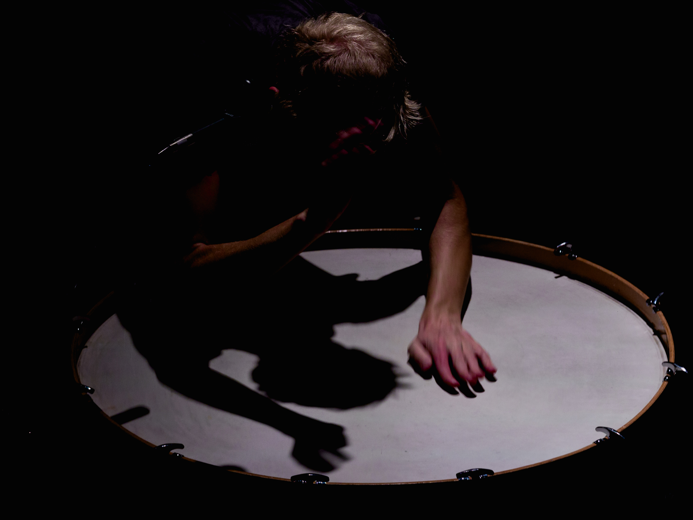

---
# Feel free to add content and custom Front Matter to this file.
# To modify the layout, see https://jekyllrb.com/docs/themes/#overriding-theme-defaults

layout: home
---
<div class="post-content" style="width: 100%; margin:auto;">
<!--<div style="text-align: center; max-width: 700px; width: 50%; margin:auto;">

  

</div>-->

<div class="row" style="width: 90%; margin: auto; max-width: 1200px;">
  <div class="column" style="width: 47.5%;">
    
  </div>

  <div class="column" style="width: 5%;"><br></div>

  <div class="column" style="width: 47.5%;">
    
  </div>
</div>

</div>
<br>
<br>
<div class="lineacross"> </div>
